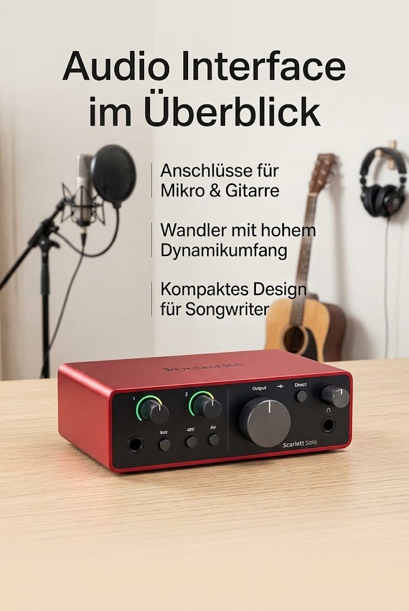

Focusrite Scarlett Solo 4th Gen USB-C-Audio-Interface

Angaben des Herstellers
Das Audio-Interface für Songwriter: Schließen Sie Mikro und Gitarre an und holen sich mit Scarlett Solo besten Studioklang überall dorthin, wo Sie Musik machen.
Klang in Studioqualität: Scarlett nutzt die gleichen Wandler mit 120 dB Dynamik wie die besten Focusrite-Audio-Interfaces aus weltweit renommierten Studios.
Finden Sie Ihren Sound: Der Air-Modus holt Gesang und Gitarren in der Mischung nach vorn und verleiht Ihren Aufnahmen musikalische Präsenz und Sättigung.
Alles, was Toningenieure und -ingenieurinnen benötigen: Pro Tools Intro+ für Focusrite, Ableton Live Lite, Cubase LE sowie die Hitmaker Expansion – eine Reihe von unverzichtbaren Effekten, leistungsstarken Software-Instrumenten.
Easy Start: Es war nie einfacher, mit der Aufnahme zu beginnen. Mit dem bewährten Easy Start Tool von Focusrite sind Sie in wenigen Minuten startklar.
Werbung. Diese Seite enthält Partnerlinks: Als Amazon-Partner verdiene ich an qualifizierten Käufen. Für dich ändert sich nichts am Preis. Preise und Verfügbarkeit stehen bei Amazon und ändern sich laufend.